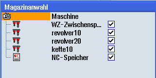

Sie haben die Möglichkeit, direkt den Zwischenspeicher, das Magazin oder den NC-Speicher anzuwählen.
Vorgehensweise
 | 1. | Die Werkzeugliste ist geöffnet.
|
| | 2. | Drücken Sie den Softkey "Magazinanwahl". |
| | | Ist nur ein Magazin vorhanden, springen Sie mit jedem Softkeydruck von einem Bereich in den nächsten, d. h. vom Zwischenspeicher zum Magazin, vom Magazin zum NC-Speicher und vom NC-Speicher zurück zum Zwischenspeicher. Der Cursor wird jeweils auf den Anfang des Magazins positioniert. |
| | | - ODER - |
| | | Sind mehrere Magazine vorhanden, öffnet sich das Fenster "Magazinanwahl". Dort positionieren Sie den Cursor auf das gewünschte Magazin und drücken den Softkey "Gehe zu ...". Der Cursor springt auf den Anfang des angegebenen Magazins. |
Magazine ausblenden

 | | Deaktivieren Sie die Kontrollkästchen neben den Magazinen, die nicht in der Magazinliste erscheinen sollen. |
Das Verhalten der Magazinanwahl bei mehreren Magazinen kann unterschiedlich konfiguriert sein.
 | Maschinenhersteller Beachten Sie hierzu die Angaben des Maschinenherstellers. |
Weitere Informationen
Weitere Informationen zu den Konfigurationsmöglichkeiten finden Sie im Funktionshandbuch Werkzeugverwaltung.